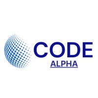

Hii My name is Ardhendu
and I am a passinate

Work Experince

Web Developer intern at CODE ALPHA(2023-august-september)
During my virtual internship at Code Alpha, a web development company, I had an incredible learning experience. From day one, I was immersed in real-world projects, collaborating with a team of talented developers. I gained hands-on experience in front-end and back-end development, working with HTML, CSS, JavaScript, and various frameworks and libraries. The supportive environment allowed me to ask questions, seek guidance, and receive constructive feedback, enabling me to grow as a developer. I also had the opportunity to participate in code reviews and team meetings, which enhanced my understanding of agile development practices. Overall, my internship at Code Alpha was a valuable stepping stone in my journey towards becoming a proficient web developer.
Web Developer intern at OCTANET(2023-june-july)
During my web development internship at OctaNet, a virtual internship company, I had an incredible learning experience. Working remotely, I was exposed to a diverse range of projects and technologies, allowing me to enhance my skills in HTML, CSS, and JavaScript. The team at OctaNet provided constant support and guidance, fostering a collaborative environment despite the virtual setting. Through regular video conferences and code reviews, I gained valuable feedback that helped me improve my coding abilities. I also had the opportunity to work on real-world client projects, which further developed my problem-solving and communication skills. Overall, my internship at OctaNet was a rewarding and enriching experience, preparing me for a successful career in web development.

Web Developer intern at INTERNPE(2023-may-june)
During my web development internship at Internpe, I had an exceptional virtual experience. The company provided a structured and supportive environment, allowing me to enhance my skills and knowledge in web development. I was assigned to various projects where I gained hands-on experience in front-end development, utilizing HTML, CSS, and JavaScript. The team at Internpe was highly collaborative and provided valuable guidance throughout the internship. Weekly meetings and code reviews fostered my professional growth, enabling me to improve my problem-solving and debugging skills. Overall, my time at Internpe was invaluable, providing me with real-world exposure and preparing me for a successful career in web development.
Web Developer intern at BHARAT INTERN(2023-july-august)
During my virtual internship at Bharat Intern, I had an incredible web development experience. Working remotely, I was exposed to a dynamic and supportive team that provided me with valuable guidance and mentorship throughout the internship. I had the opportunity to collaborate on real-world web development projects, enhancing my skills in HTML, CSS, and JavaScript. The company's emphasis on continuous learning allowed me to explore emerging technologies and frameworks, such as React and Node.js. Moreover, the internship fostered a culture of innovation, where I was encouraged to propose and implement creative solutions. Overall, my internship at Bharat Intern was a fulfilling and enriching experience that significantly contributed to my growth as a web developer.